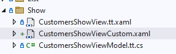

View - Custom Show
In some cases, you may want to design your own show-view from scratch (in terms of xaml).
The example is based on "Customers", where a custom show-view is created.
By marking "Customers", selecting the "Show" tab, choosing "View - Custom" under "Code Tasks", and clicking "Add Code".

For the new custom-show-view to be used in the application, it must be registered in the CustomersModule.
How to do this is stated as a comment in the code in the custom-show-view:
//Implementation information:
//Register the view in the CustomersModule, override the method: RegisterTypes
//
//containerRegistry.RegisterForNavigation<Views.Show.CustomersShowViewCustom, Views.Show.CustomersShowViewModel>(nameof(Views.Show.CustomersShowView));
The same procedure can be done for List, Edit, and Insert.